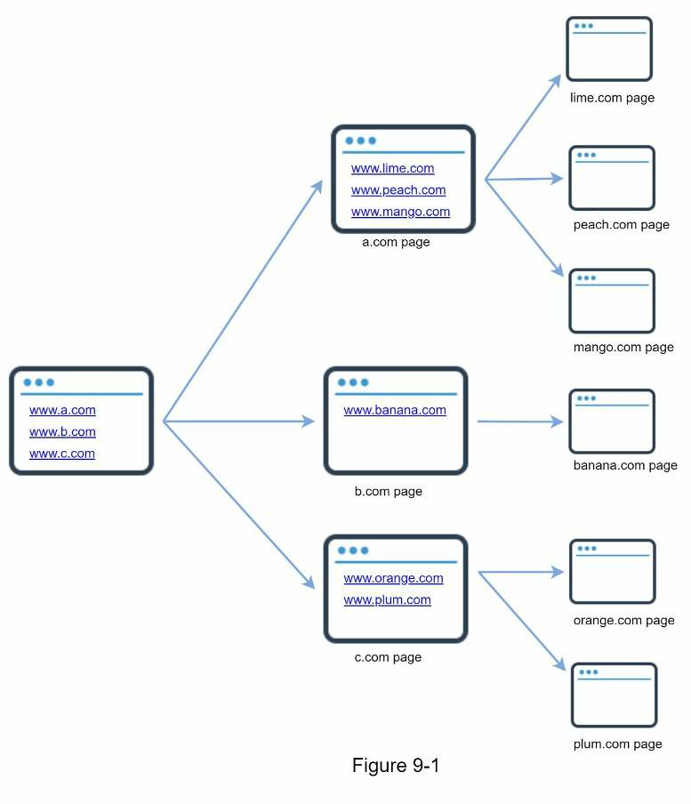
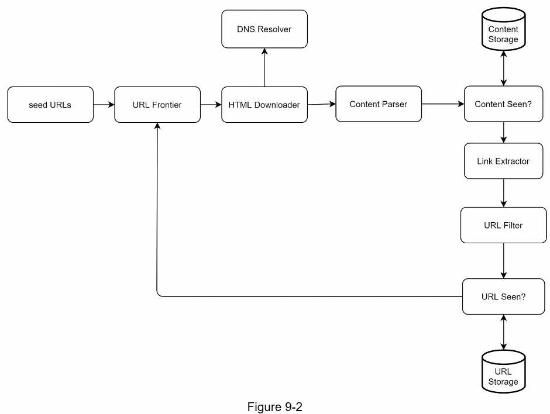
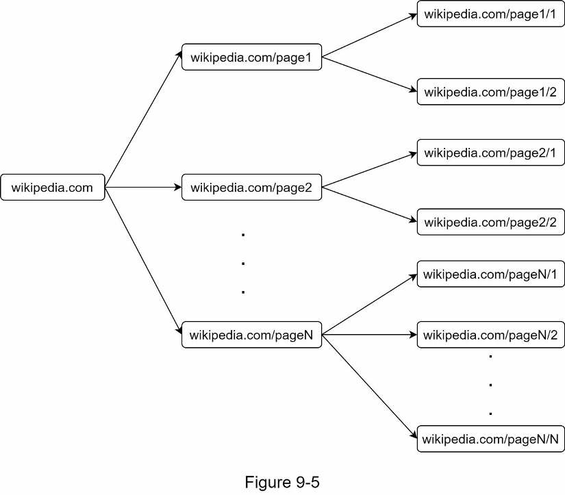
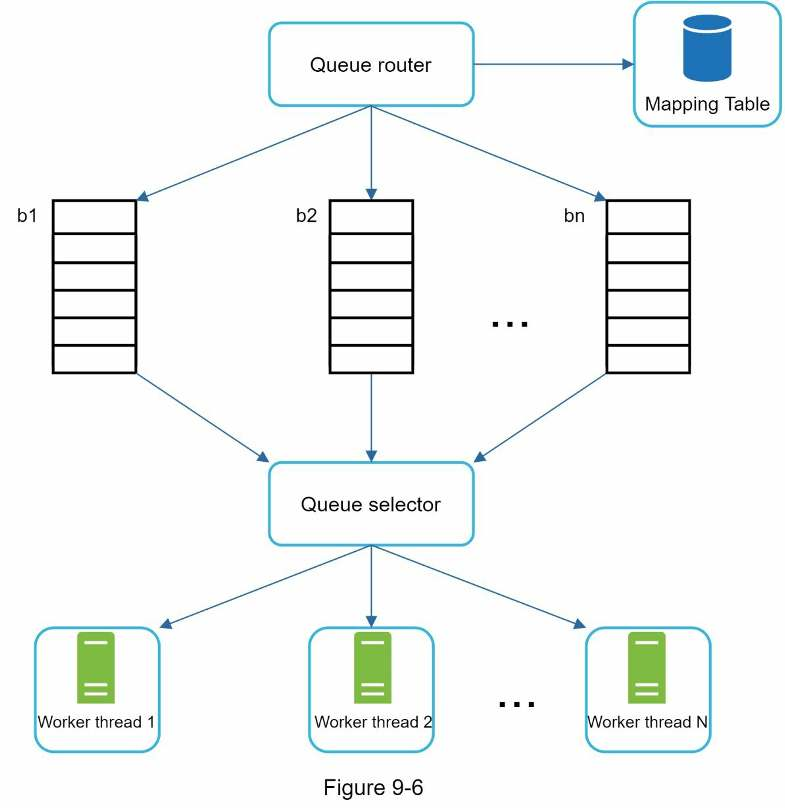
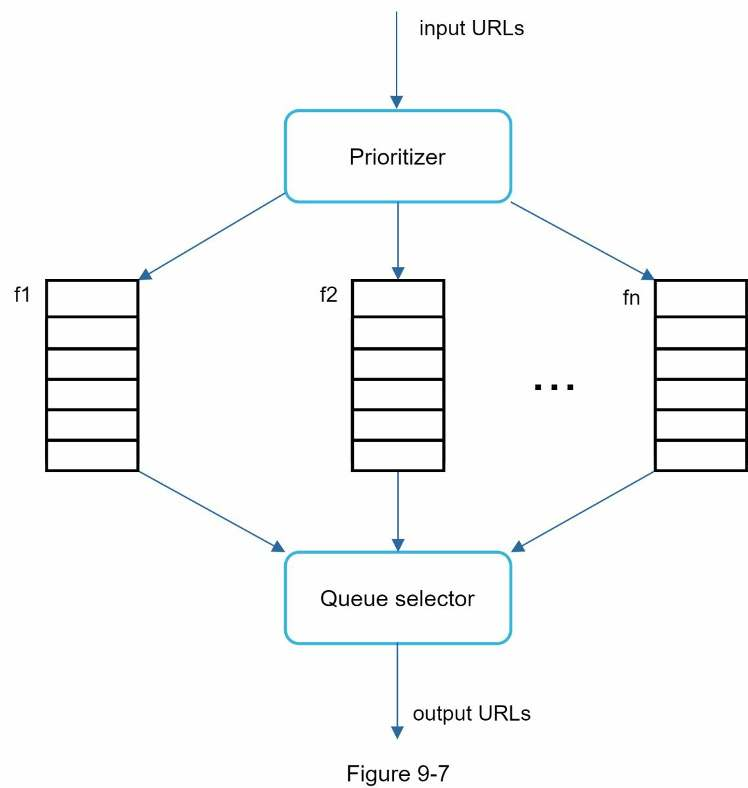
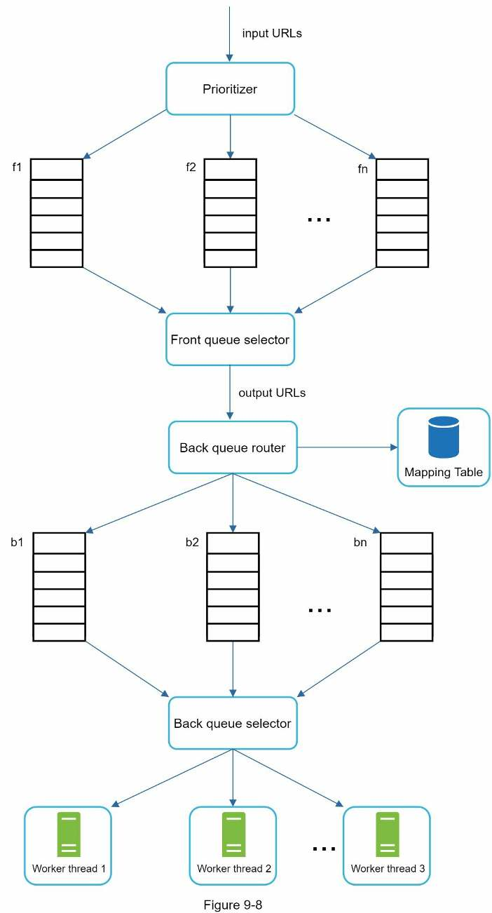
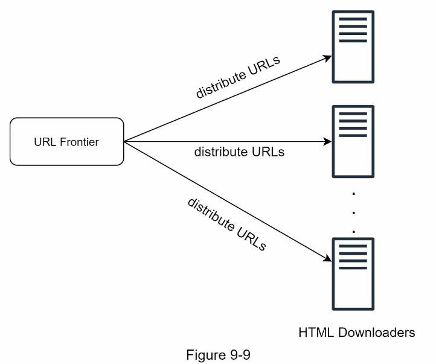
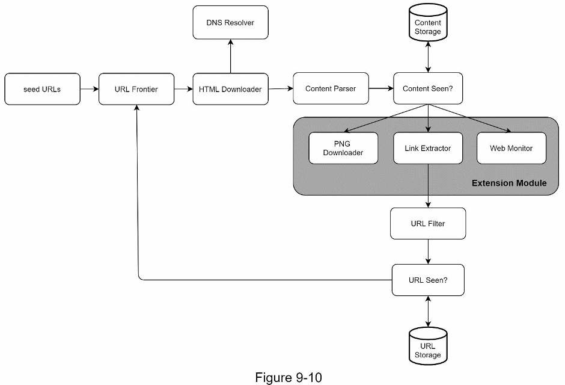

Chapter 9 · Design problem
Design a Web Crawler
How a crawler turns a handful of seed URLs into a billion pages a month: the download → parse → dedupe → extract loop, and the URL frontier that keeps it polite, prioritized and fresh.
TL;DR
- Scope: crawl for search engine indexing, 1 billion HTML pages/month, include new and edited pages, store pages for 5 years, ignore duplicate content.
- Numbers: ~400 pages/s (800 peak) · 500 KB per page → 500 TB/month → 30 PB over 5 years.
- A good crawler is scalable, robust, polite and extensible.
- The loop: seed URLs → URL frontier → HTML downloader (+ DNS resolver) → content parser → “content seen?” → URL extractor → URL filter → “URL seen?” → frontier.
- Dedupe twice: compare page hashes (~29% of pages are duplicates); track known URLs with a Bloom filter or hash table.
- BFS, not DFS (DFS goes too deep). A plain FIFO floods one host and ignores importance, so the URL frontier uses front queues for priority and back queues (one host per queue, one worker per queue) for politeness.
- Downloader: obey cached robots.txt; go faster with distributed crawl, a DNS cache, locality and short timeouts.
- Stay safe: consistent hashing, saved crawl state, a max URL length against spider traps, and filtering out noise.

Interview answer skeleton
If asked this in an interview, walk through these four beats. Each maps to a section below.
- Clarify (≈5 min) Ask the purpose (search indexing), pages per month (1 billion), content types (HTML only), new/edited pages (yes), storage (5 years), duplicates (ignore). Name the four qualities: scalable, robust, polite, extensible. Estimate ~400 QPS, 800 peak, 500 TB/month, 30 PB.
- High-level design (≈10 min) Draw the component loop and walk the 11-step workflow. Call out “content seen?” (hash compare) and “URL seen?” (Bloom filter).
- Deep dive (≈20 min) BFS over DFS and its two problems. URL frontier: front queues for priority, back queues for politeness, freshness, disk + memory buffers. Downloader: robots.txt, distributed crawl, DNS cache, locality, short timeout. Robustness, extensibility, and duplicates / spider traps / noise.
- Wrap up (≈5 min) Server-side rendering, anti-spam filtering, DB replication and sharding, stateless horizontal scaling, availability/consistency/reliability, analytics.
Step 1Understand the problem and establish design scope
A crawler takes hours as a school project and a whole team at web scale, so pin down purpose and scale first.
What a crawler is for
A web crawler (also called a robot or spider) discovers new or updated content on the web: web pages, images, videos, PDF files and so on. It starts by collecting a few pages, then follows the links on those pages to find new content.

| Use case | What the crawler does | Example |
|---|---|---|
| Search engine indexing (most common) | Collects pages to build a local index for a search engine | Googlebot, behind Google Search |
| Web archiving | Collects web information to preserve it for future use | National libraries, e.g. the US Library of Congress and the EU web archive |
| Web mining | Discovers useful knowledge from the internet | Top financial firms download shareholder meetings and annual reports to learn key company initiatives |
| Web monitoring | Watches for copyright and trademark infringements | Digimarc finds pirated works and reports |
The basic algorithm
- Given a set of URLs, download all the web pages they address.
- Extract URLs from those pages.
- Add the new URLs to the list of URLs to download, and repeat.
It looks simple, but a vastly scalable crawler is extremely complex, and nobody designs a massive one within an interview. Ask questions to set the scope.
Clarify the requirements
| You ask | Interviewer says |
|---|---|
| What's the main purpose: search engine indexing, data mining, something else? | Search engine indexing. |
| How many pages are collected per month? | 1 billion. |
| Which content types? HTML only, or also PDFs, images, etc.? | HTML only. |
| Should we consider newly added or edited pages? | Yes. |
| Do we store the crawled HTML pages? | Yes, for up to 5 years. |
| How do we handle pages with duplicate content? | Ignore them. |
Even for a “straightforward” product like a crawler, you and the interviewer may hold different assumptions. Clarify them.
Characteristics of a good crawler
Besides the functional answers, note down these four qualities. They drive the whole design.
| Quality | What it means |
|---|---|
| Scalability | The web has billions of pages. Crawling must be extremely efficient, using parallelization. |
| Robustness | The web is full of traps: bad HTML, unresponsive servers, crashes, malicious links. The crawler must handle all these edge cases. |
| Politeness | Don't make too many requests to one website within a short time interval. |
| Extensibility | Supporting a new content type needs minimal changes. If you later crawl image files, you shouldn't have to redesign the whole system. |
Back-of-the-envelope estimation
These rest on assumptions, so agree them with the interviewer. Assume 1 billion pages downloaded per month and an average page size of 500 KB (the book writes “500k”). Storage units are covered in Chapter 2's “Power of 2” section.
Step 2Propose high-level design and get buy-in
URLs flow out of the frontier, pages come back, and newly found links loop back into the frontier after two dedupe checks.
The design draws on earlier crawler studies (Mercator; Olston & Najork).

The components
Seed URLs
The crawl's starting point. For one university's website, seed with its domain name. For the entire web, pick seeds that reach as many links as possible by dividing the URL space into smaller ones:
- By locality: different countries may have different popular websites.
- By topic: e.g. shopping, sports, healthcare.
URL Frontier
Most modern crawlers split crawl state in two: to be downloaded and already downloaded. The component storing the URLs to be downloaded is the URL Frontier. Treat it as a first-in-first-out (FIFO) queue for now; the deep dive refines it.
HTML Downloader
Downloads web pages from the internet. The URLs come from the URL Frontier.
DNS Resolver
A URL must be translated into an IP address before download. The HTML Downloader calls the DNS Resolver for it. For example, www.wikipedia.org resolved to 198.35.26.96 as of 3/5/2019.
Content Parser
Parses and validates each downloaded page, because malformed pages cause problems and waste storage. It's a separate component: parsing inside a crawl server would slow crawling.
Content Seen?
About 29% of web pages are duplicated content. “Content Seen?” detects content already stored, eliminating redundant copies and shortening processing time. Character-by-character comparison is too slow across billions of pages, so compare the pages' hash values instead.
Content Storage
Stores the HTML content. The choice of storage depends on data type, data size, access frequency, life span, etc. Both disk and memory are used:
- Most content on disk: the data set is too big for memory.
- Popular content in memory: this reduces latency.
URL Extractor
Parses HTML pages and extracts their links. The figures label it Link Extractor; it's the same component. Relative paths become absolute URLs by adding the site prefix, here https://en.wikipedia.org. Figure 9-3, transcribed:
<html class="client-nojs" lang="en" dir="ltr">
<head>
<meta charset="UTF-8"/>
<title>Wikipedia, the free encyclopedia</title>
</head>
<body>
<li><a href="/wiki/Cong_Weixi" title="Cong Weixi">Cong Weixi</a></li>
<li><a href="/wiki/Kay_Hagan" title="Kay Hagan">Kay Hagan</a></li>
<li><a href="/wiki/Vladimir_Bukovsky" title="Vladimir Bukovsky">Vladimir Bukovsky</a></li>
<li><a href="/wiki/John_Conyers" title="John Conyers">John Conyers</a></li>
</body>
</html>
↓ Extracted links
https://en.wikipedia.org/wiki/Cong_Weixi
https://en.wikipedia.org/wiki/Kay_Hagan
https://en.wikipedia.org/wiki/Vladimir_Bukovsky
https://en.wikipedia.org/wiki/John_ConyersURL Filter
Excludes certain content types, file extensions, error links, and URLs on “blacklisted” sites.
URL Seen?
Tracks URLs that were already visited or are already in the frontier. Adding the same URL many times increases server load and can cause infinite loops. Common implementations are a Bloom filter or a hash table. The book doesn't detail them.
URL Storage
Stores the URLs that were already visited.
Web crawler workflow
- Add the seed URLs to the URL Frontier.
- The HTML Downloader fetches a list of URLs from the URL Frontier.
- The HTML Downloader gets the URLs' IP addresses from the DNS resolver and starts downloading.
- The Content Parser parses the HTML pages and checks whether they're malformed.
- Parsed, validated content goes to “Content Seen?”.
- “Content Seen?” checks whether the page is already in storage.
- Already stored: the same content was processed under a different URL. Discard the page.
- Not stored: new content. Pass it to the Link Extractor.
- The Link Extractor extracts the links from the HTML page.
- The extracted links go to the URL Filter.
- The filtered links go to “URL Seen?”.
- “URL Seen?” checks whether each URL is already in storage. If it is, it was processed before and nothing needs to be done.
- If a URL hasn't been processed before, add it to the URL Frontier.
Step 3Design deep dive
Six topics: traversal order, URL frontier, HTML downloader, robustness, extensibility, problematic content.
DFS vs BFS
The web is a directed graph: pages are nodes, hyperlinks (URLs) are edges, and crawling traverses it. Depth-first search (DFS) is usually a bad choice, because the depth can be very deep.
Breadth-first search (BFS) is what crawlers commonly use. It's implemented with a FIFO queue: URLs are dequeued in the order they were enqueued. Plain BFS has two problems:
- It's impolite. Most links on a page point back to the same host. In Figure 9-5, every link on wikipedia.com is internal, so the crawler stays busy with one host. Downloading in parallel then floods Wikipedia's servers with requests.
- It ignores priority. The web is large and pages differ in quality and importance. You may want to prioritize URLs by page rank, web traffic, update frequency, etc.

URL frontier
The URL frontier stores URLs to be downloaded and fixes both BFS problems. It ensures politeness, URL prioritization and freshness, following key papers on frontier design (see references).
Frontier · Politeness
Sending too many requests to the same hosting server in a short period is “impolite”, and can even be treated as a denial-of-service (DoS) attack. With no constraint, a crawler can send thousands of requests per second to one website and overwhelm its servers.
The rule: download one page at a time from the same host, optionally with a delay between downloads. Map website hostnames to download (worker) threads; each thread has its own FIFO queue and only downloads URLs from it.

| Part | Role |
|---|---|
| Queue router | Ensures each queue (b1, b2, … bn) only contains URLs from the same host. |
| Mapping table | Maps each host to a queue (Table 9-1). |
| FIFO queues b1 … bn | Each queue holds URLs from one host. |
| Queue selector | Maps each worker thread to one FIFO queue; the worker only downloads from that queue. |
| Worker threads 1 … N | Download pages one by one from the same host. A delay can be added between two downloads. |
| Host | Queue |
|---|---|
| wikipedia.com | b1 |
| apple.com | b2 |
| … | … |
| nike.com | bn |
Table 9-1 · The mapping table: one host per queue.
Each line is a URL in discovery order. Press Next tick: every worker downloads one URL. Compare the per-host load with a plain FIFO queue drained by the same number of threads.
Frontier · Priority
A random forum post about Apple products carries far less weight than the Apple home page, even though both contain “Apple”. Crawl the home page first.
Prioritize URLs by usefulness, measured by PageRank (Google's link-based importance score), website traffic, update frequency, etc. The Prioritizer is the component that handles this.

- Prioritizer: takes URLs as input and computes their priorities.
- Queues f1 … fn: each has an assigned priority. High-priority queues are selected with higher probability.
- Queue selector: picks a queue at random, biased toward higher-priority queues.
Frontier · Front and back queues together
The full URL frontier stacks the two designs:
- Front queues manage prioritization: prioritizer → f1…fn → front queue selector.
- Back queues manage politeness: back queue router (+ mapping table) → b1…bn → back queue selector → worker threads.

Frontier · Freshness
Pages are constantly added, deleted and edited, so the crawler must periodically recrawl downloaded pages to keep the data set fresh. Recrawling every URL is time-consuming and resource-intensive. Two optimizations:
- Recrawl based on each page's update history.
- Prioritize URLs, and recrawl important pages first and more often.
Frontier · Storage
In a real search-engine crawl, the frontier can hold hundreds of millions of URLs.
| Where | Verdict |
|---|---|
| All in memory | ✗ Neither durable nor scalable |
| All on disk | ✗ Disk is slow and easily becomes the crawl's bottleneck |
| Hybrid (chosen) | ✓ Most URLs live on disk, so space isn't a problem. In-memory buffers serve enqueue/dequeue to cut disk reads and writes, and buffers are periodically written to disk. |
HTML downloader
Downloads pages over HTTP. Two topics: robots.txt and performance.
Robots.txt
robots.txt, the Robots Exclusion Protocol, is the standard websites use to tell crawlers which pages they may download. Before crawling a site, check its robots.txt and follow its rules. To avoid downloading it repeatedly, cache the results, re-downloading the file into the cache periodically.
Excerpt from https://www.amazon.com/robots.txt. Directories such as creatorhub are off-limits to Googlebot:
User-agent: Googlebot
Disallow: /creatorhub/*
Disallow: /rss/people/*/reviews
Disallow: /gp/pdp/rss/*/reviews
Disallow: /gp/cdp/member-reviews/
Disallow: /gp/aw/cr/Downloader · Performance optimizations
| Optimization | How it works |
|---|---|
| 1. Distributed crawl | Spread crawl jobs over multiple servers, each running multiple threads. Partition the URL space so each downloader handles a subset of URLs (Figure 9-9). |
| 2. Cache DNS resolver | DNS is a bottleneck. Many DNS interfaces are synchronous, and responses take 10 ms to 200 ms. While one crawler thread waits on DNS, other threads are blocked until it completes. Keep your own DNS cache (domain name → IP), updated periodically by cron jobs. |
| 3. Locality | Distribute crawl servers geographically. Servers closer to website hosts download faster. Locality applies to most components: crawl servers, cache, queue, storage, etc. |
| 4. Short timeout | Some servers respond slowly or not at all. Set a maximal wait time. If a host doesn't respond within it, stop that job and crawl other pages. |

Robustness
- Consistent hashing: distributes load among downloaders, and lets you add or remove a downloader server easily. See Chapter 5.
- Save crawl states and data: write them to a storage system to guard against failures. A disrupted crawl restarts by loading the saved states and data.
- Exception handling: errors are inevitable and common at scale. Handle them gracefully without crashing the system.
- Data validation: an important measure to prevent system errors.
Extensibility
Systems evolve, so support new content types by plugging in new modules.

- PNG Downloader module: plugged in to download PNG files.
- Web Monitor module: added to monitor the web and prevent copyright and trademark infringements.
Detect and avoid problematic content
| Problem | What it is | Fix |
|---|---|---|
| 1. Redundant content | Nearly 30% of web pages are duplicates. | Hashes or checksums detect duplication. |
| 2. Spider traps | A page that sends the crawler into an infinite loop. Example, an infinitely deep directory: www.spidertrapexample.com/foo/bar/foo/bar/foo/bar/… | Set a maximal URL length. No one-size-fits-all fix exists, though. Trap sites are easy to spot by their unusually large number of discovered pages. Automatic avoidance algorithms are hard, so a person verifies the trap, then excludes the site or applies customized URL filters. |
| 3. Data noise | Content with little or no value: advertisements, code snippets, spam URLs, etc. | Not useful for crawlers. Exclude it if possible. |
Step 4Wrap up
Recap the four qualities (scalability, politeness, extensibility, robustness) and the components, then raise what's still missing.
A scalable crawler is not trivial: the web is enormous and full of traps. If there's time, raise these:
- Server-side rendering. Many sites use scripts like JavaScript and AJAX to generate links on the fly. Downloading and parsing the raw page misses those links. Fix: perform server-side rendering (also called dynamic rendering) before parsing the page.
- Filter out unwanted pages. Storage and crawl resources are finite, so an anti-spam component helps filter out low-quality and spam pages.
- Database replication and sharding. They improve the data layer's availability, scalability and reliability.
- Horizontal scaling. A large crawl needs hundreds or even thousands of servers for download tasks. The key is to keep servers stateless.
- Availability, consistency and reliability. These are at the core of any large system's success (see Chapter 1).
- Analytics. Collecting and analyzing data matters, because data is the key ingredient for fine-tuning.
Self-test
Name the four main uses of a web crawler, with an example of each.
Search engine indexing (Googlebot, the most common), web archiving (national libraries such as the US Library of Congress), web mining (financial firms pulling annual reports), and web monitoring (Digimarc finding pirated works).
What scope did the interviewer set for this crawler?
Search engine indexing, 1 billion pages per month, HTML only, include newly added or edited pages, store HTML pages for up to 5 years, ignore duplicate content.
What are the four characteristics of a good crawler?
Scalability (parallelize across billions of pages), robustness (survive bad HTML, unresponsive servers, malicious links), politeness (don't hammer one site), extensibility (add content types with minimal change).
Walk through the capacity estimate.
1B pages ÷ 30 days ÷ 24 h ÷ 3,600 s ≈ 400 QPS, peak 800. At 500 KB per page that's 500 TB/month, and 500 TB × 12 × 5 = 30 PB over five years.
How does “Content Seen?” detect duplicate pages, and why not compare the HTML directly?
It compares hash values of pages. Character-by-character comparison is too slow across billions of pages, and about 29% of pages are duplicates, so the check is worth doing.
What does “URL Seen?” track, why is it needed, and how is it implemented?
URLs already visited or already in the frontier. Without it the same URL gets added repeatedly, which raises server load and can cause infinite loops. It is typically a Bloom filter or a hash table.
Why do crawlers use BFS instead of DFS, and what two problems does plain BFS have?
DFS can go very deep. BFS with a FIFO queue is impolite, because most links point to the same host, so parallel downloads flood it. It also ignores priority, because every URL is treated as equally important.
How does the URL frontier enforce politeness?
A queue router uses a mapping table (host → queue) so each FIFO queue b1…bn holds one host's URLs. The queue selector maps each worker thread to one queue, and the worker downloads one page at a time, optionally with a delay between downloads.
What do the front queues and back queues of the URL frontier each do?
Front queues manage priority: a prioritizer scores URLs by usefulness (PageRank, traffic, update frequency) into queues f1…fn, and a selector picks randomly with a bias toward high priority. Back queues manage politeness, one host per queue.
How do you keep crawled data fresh without recrawling everything?
Recrawl based on each page's update history, and prioritize so important pages are recrawled first and more often.
Where does the URL frontier live, given hundreds of millions of URLs?
Hybrid: most URLs on disk, with in-memory buffers for enqueue/dequeue that are periodically flushed to disk. Memory alone isn't durable or scalable, and disk alone is a slow bottleneck.
What is robots.txt and how should the crawler handle it?
The Robots Exclusion Protocol file, where a site lists which pages crawlers may download. Check it before crawling a site, follow its rules, and cache it, refreshing the cache periodically.
Name four HTML downloader performance optimizations. Why does the DNS one matter?
Distributed crawl, DNS cache, locality, short timeout. DNS lookups take 10–200 ms and many DNS interfaces are synchronous, so one lookup can block other threads. A cron-refreshed DNS cache avoids that.
What is a spider trap and how do you defend against it?
A page that loops the crawler forever, e.g. /foo/bar/foo/bar/…. Cap URL length. Spot trap sites by their unusually large page counts, then exclude them or add custom URL filters after manual verification.
How would you crawl links that JavaScript generates on the fly?
Perform server-side rendering (dynamic rendering) before parsing, so dynamically generated links appear in the page the parser sees.
Terms to know
- Seed URLs
- The starting URLs of a crawl, often chosen by splitting the URL space by country or topic.
- URL frontier
- The structure holding URLs still to be downloaded. It enforces priority, politeness and freshness.
- Politeness
- Not sending too many requests to one host in a short time: one page at a time per host, with a delay.
- Front / back queues
- Front queues order URLs by priority. Back queues hold one host each, so each host gets one worker.
- PageRank
- A score of a page's importance based on the links pointing to it. One way to prioritize URLs.
- Bloom filter
- A compact probabilistic set. It answers “definitely not seen” or “probably seen”, so it can give false positives but never false negatives.
- robots.txt
- The Robots Exclusion Protocol: a site's file stating which pages crawlers may fetch.
- DNS resolver
- Translates a hostname into an IP address. Slow and often synchronous, so crawlers cache its results.
- Spider trap
- A page or URL structure that leads a crawler into an infinite loop.
- Server-side (dynamic) rendering
- Running a page's scripts before parsing it, so JavaScript-generated links are visible.
Book references (go deeper)
- US Library of Congress: web archives
- EU Web Archive
- Digimarc: piracy intelligence
- Heydon A., Najork M. Mercator: A scalable, extensible web crawler. World Wide Web 2(4), 1999, pp. 219–229.
- Christopher Olston, Marc Najork: Web Crawling
- 29% of sites face duplicate content issues
- Rabin M.O. Fingerprinting by random polynomials. Center for Research in Computing Technology, Aiken Computation Laboratory, Harvard Univ., 1981.
- B. H. Bloom. Space/time trade-offs in hash coding with allowable errors. Communications of the ACM 13(7), 1970, pp. 422–426.
- Donald J. Patterson: Web Crawling (lecture slides)
- L. Page, S. Brin, R. Motwani, T. Winograd. The PageRank citation ranking: Bringing order to the web. Stanford technical report, 1998.
- Burton Bloom. Space/time trade-offs in hash coding with allowable errors. CACM 13(7), 1970. (Same paper as [8]; the book cites it for duplicate detection.)
- Google: Dynamic rendering
- T. Urvoy, T. Lavergne, P. Filoche. Tracking web spam with hidden style similarity. AIRWeb 2006.
- H.-T. Lee, D. Leonard, X. Wang, D. Loguinov. IRLbot: Scaling to 6 billion pages and beyond. WWW 2008.